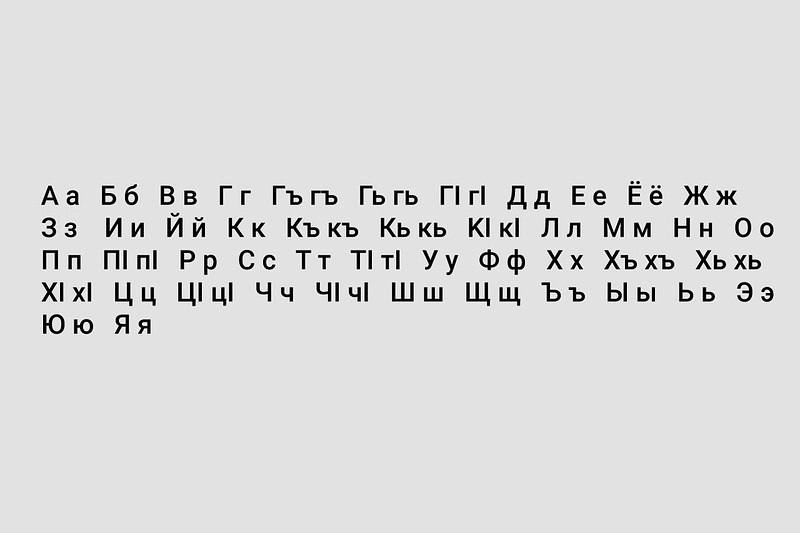

Язык даргинцев

Даргинцы говорят на даргинском языке нахско-дагестанской группы северо-кавказской семьи языков. Основные диалекты — акушинский, урахинский, цудахарский, сирхинский, хайдакский, муэринский, губденский, мекегинский, кадарский, чирагский, мегебский, кубачинский. Литературный язык начал складываться в советское время на основе акушинского диалекта. Письменность даргинцев появилась в раннем средневековье, судя по археологическим материалам, была албанской (кавказской). С распространением ислама утвердилась арабская письменность. Уже с XV в. начались попытки ее приспособления для дагестанских языков, и к XVII в. внедрилась и стала распространенной дагестанская письменность (аджам) на арабской графической основе. В советское время письменность была переведена на русскую графическую основу (кириллицу).
В даргинском алфавите 46 букв. В нем нет звуков «о» и «ф»: вместо них в заимствованных словах даргинцы произносят «у» и «п». А гласных всего четыре: «а», «е», «и», «у». При этом язык изобилует согласными: кроме глухих и звонких есть абруптивные — их произносят со своеобразным щелчком. Звучит даргинский язык гортанно и мягко за счет шипящих звуков, похожих на русские «х» и «ш».
Некоторые примеры слов на даргинском языке:
ахIердеш — милость, привязанность, любовь; абалкес — огонь, свет;
неш, аба — мать;
юрт — дом;
хиял — мечта.